Vintage Audio Hardware
Tape delay, reverb, and mics
Spring 2019 - Audio Tech Talk Series
April 23, 2019
Tape Delay
Basic Theory
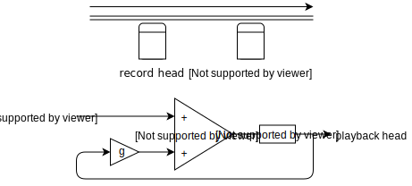Early start
Sun Studios - 2 mics and 2 tape machines
Les Paul - Whispering (1951)
Elvis Presley - Blue Moon Of Kentucky (1954)
The Zombies - Time of the Season (1968)
Extension
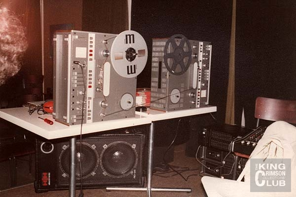 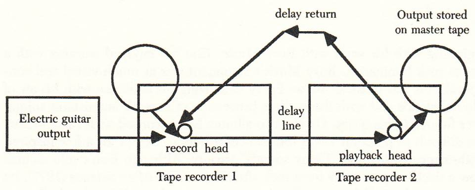Robert Fripp - Frippertronics (1979)
EchoSonic by Ray Butts (1952)
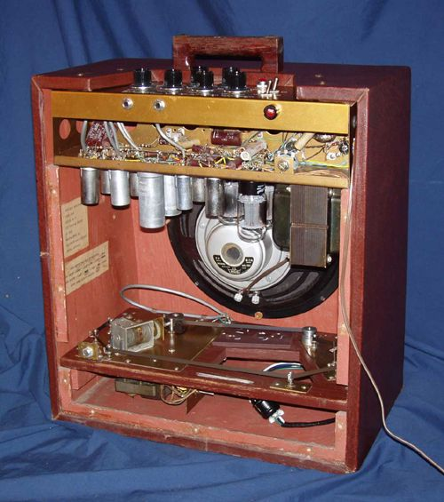 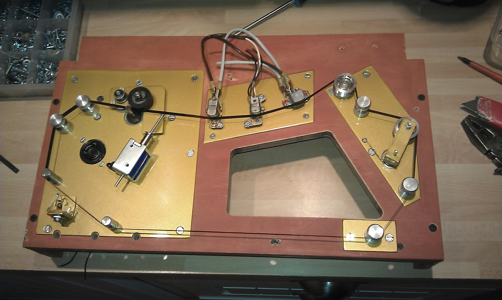Echoplex by Mike Battle (1959)
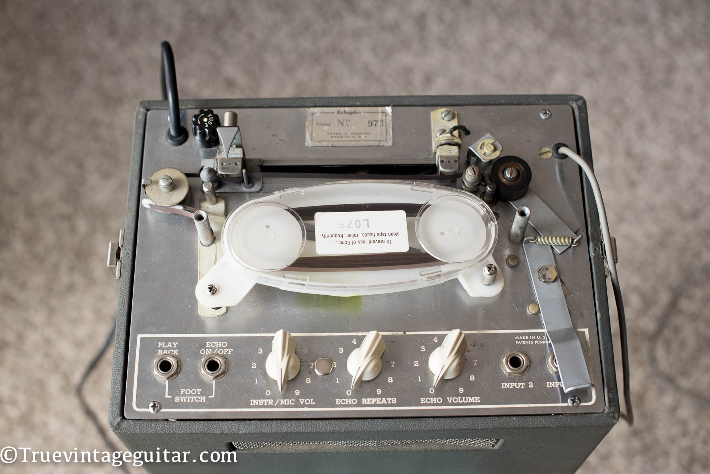Space Echo by Roland (1973)
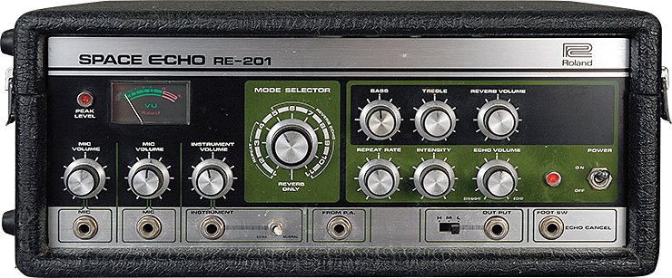 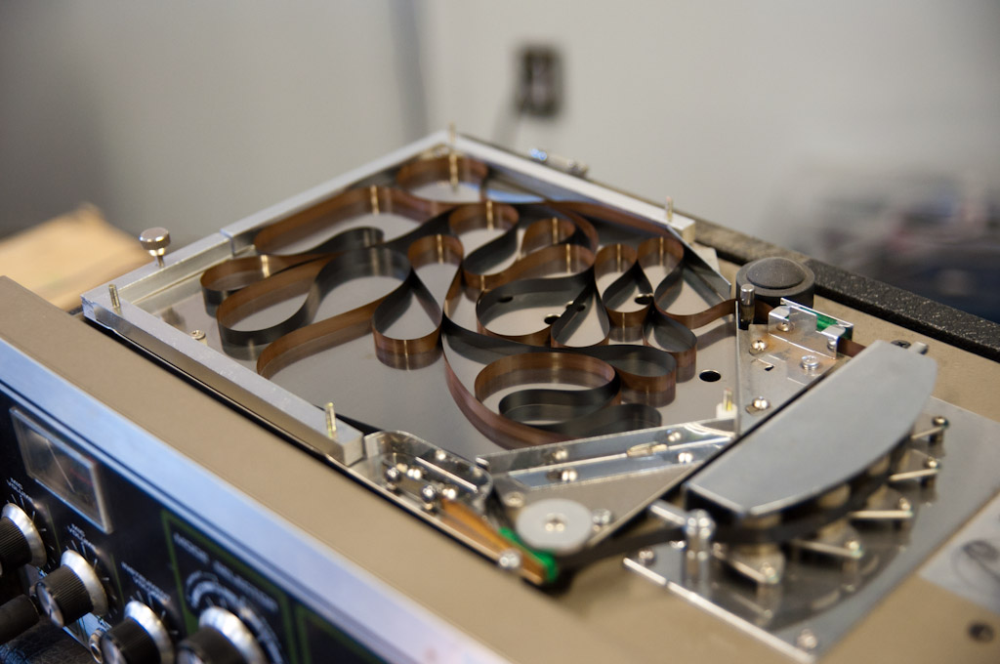Complex tape delay

Echo Boy by soundtoys (2012)
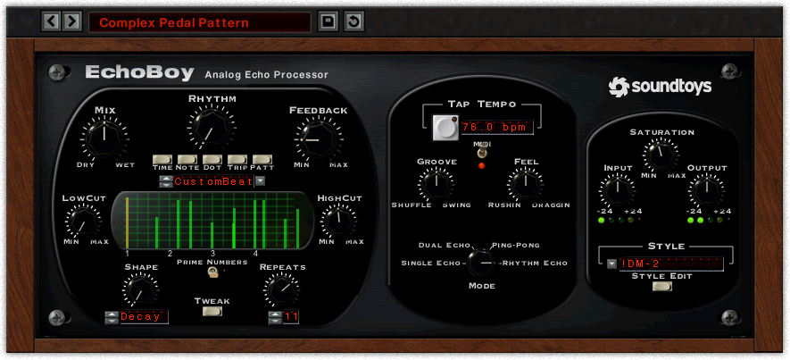Reverberation
Echo Chamber
Abbey Road
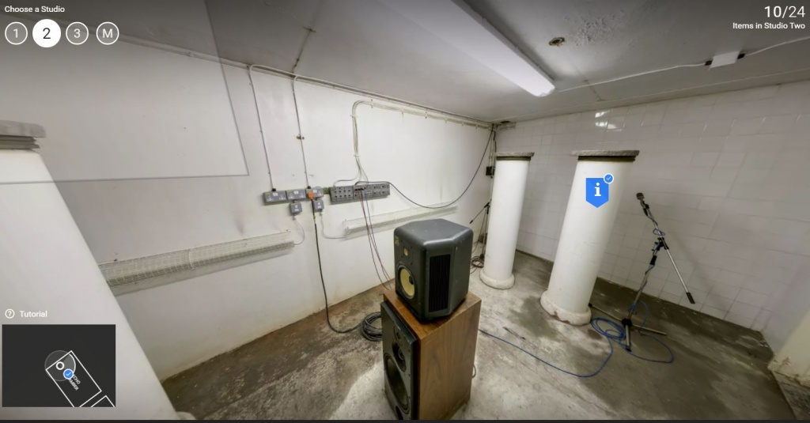Sunset Sounds

Spring Reverb
Hammond Organs (1932)

Ampeg Reverberocket (1961)
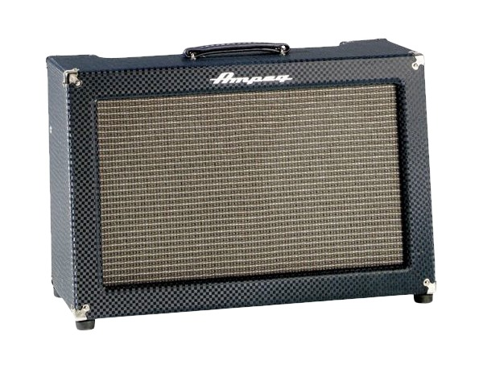AKG BX20 (late 1960s)
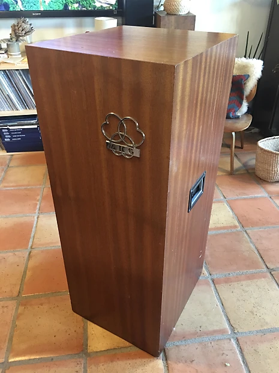Plate Reverb
EMT 140 (1957)
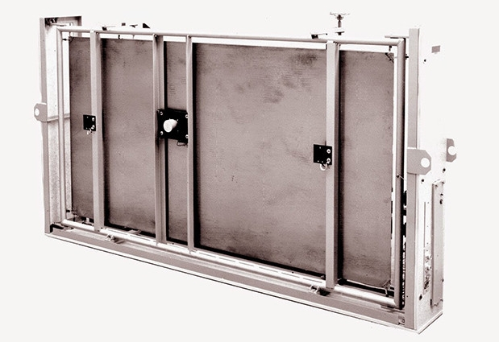Microphones
RCA 44-BX
1932
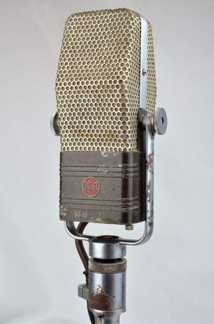Coles 4038
1950